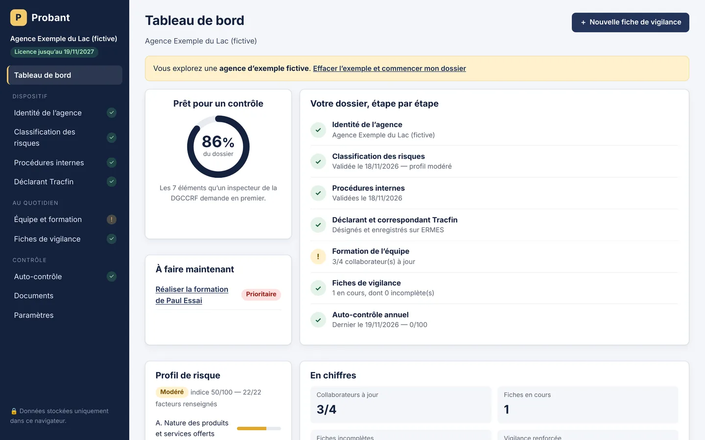
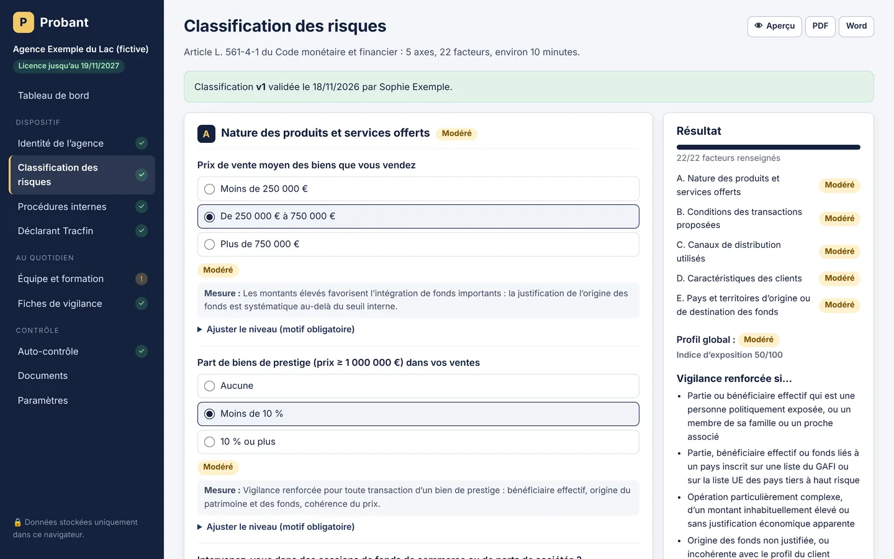
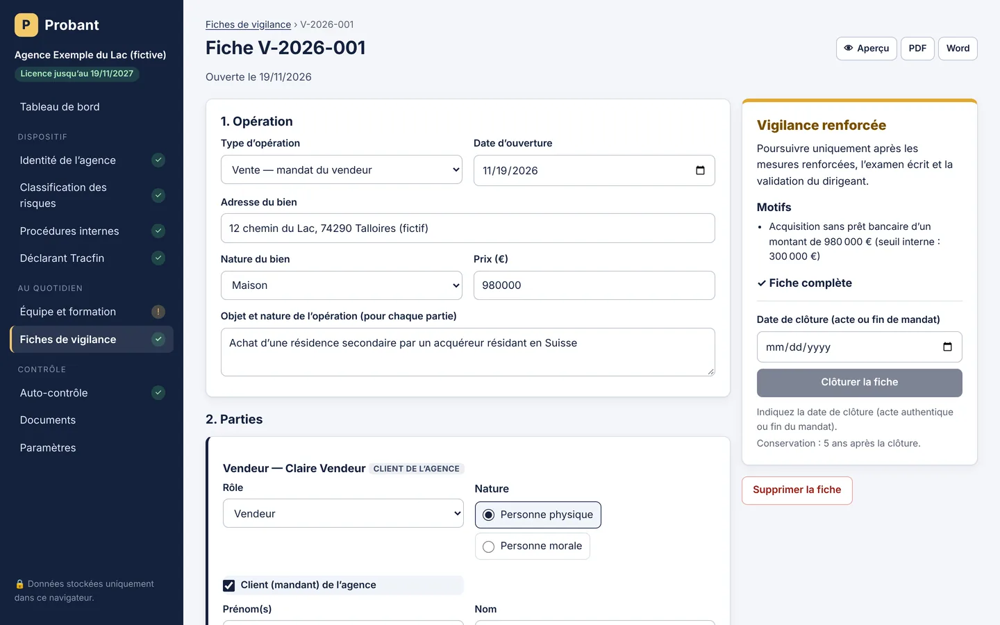
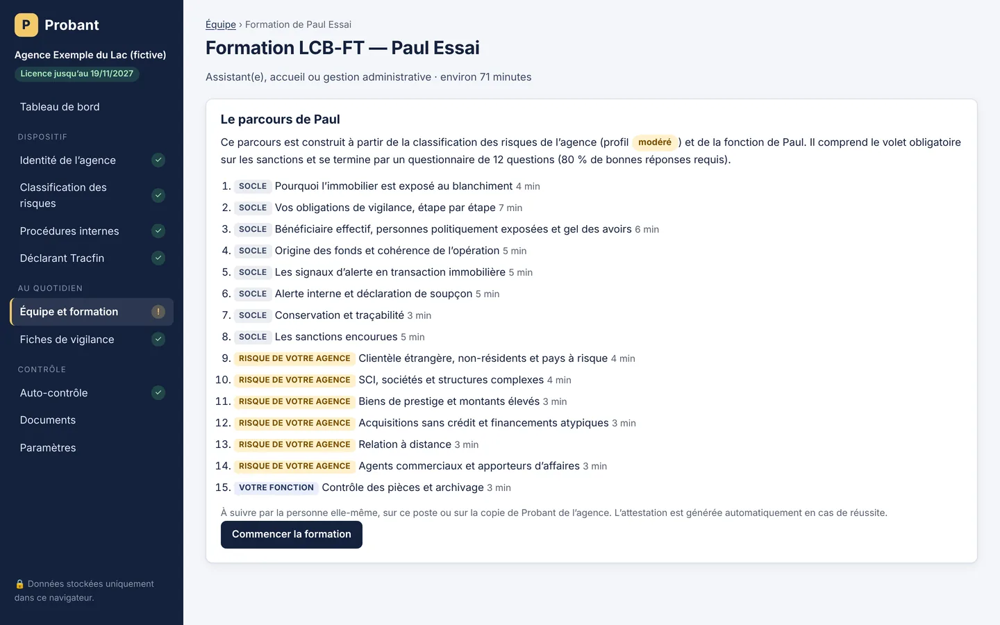

À l’embauche, puis régulièrement
Toute personne qui participe aux obligations LCB-FT doit être formée dès son arrivée : négociateur, agent commercial, assistante qui collecte les pièces…
Pour les agences immobilières indépendantes
Depuis le 26 avril 2026, chaque collaborateur doit être formé selon les risques propres à votre agence, et vous devez pouvoir le prouver. Probant produit en 30 minutes votre dossier LCB-FT complet : classification des risques, procédures, désignation Tracfin, formation et attestations, fiches de vigilance.

Ce qui a changé
Toute personne qui participe aux obligations LCB-FT doit être formée dès son arrivée : négociateur, agent commercial, assistante qui collecte les pièces…
Le contenu et la fréquence dépendent de la classification des risques de l’agence et de la fonction de chacun, avec un volet obligatoire sur les sanctions. Une formation générique, identique pour tous, risque d’être jugée insuffisante.
Programmes, dates, attestations, supports : tout se conserve pendant les fonctions du collaborateur, puis 5 ans après son départ.
Article D. 561-38-1-1 du Code monétaire et financier, créé par le décret n° 2026-310 du 24 avril 2026, applicable depuis le 26 avril 2026.4
Le contexte
L’immobilier est classé à risque élevé de blanchiment par l’Analyse nationale des risques5. La DGCCRF contrôle les agences ; la Commission nationale des sanctions peut aller jusqu’à l’interdiction d’exercer et 5 M€ d’amende6.
« Aucun professionnel contrôlé ne respectait la totalité des exigences. »
DGCCRF, contrôles LCB-FT dans l’immobilier, qui relève aussi l’absence quasi générale de protocole interne écrit1
10 000 €
d’amende pour un dirigeant d’agence, et une interdiction d’exercer avec sursis, pour une seule vente de 290 000 € dont l’origine des fonds n’était pas documentée.
Commission nationale des sanctions, février 20262
65 %
des 1 739 professionnels de l’immobilier contrôlés présentaient au moins une anomalie, toutes réglementations confondues.
DGCCRF, enquête publiée fin 20243
La solution
Chaque document porte le nom de votre agence, cite ses bases légales et s’exporte en PDF et en Word.
Comment ça marche
Prix moyens, part d’achats sans crédit, clientèle étrangère, sociétés acquéreuses, agents commerciaux… Des questions simples, sur votre activité réelle.
Classification, procédures, désignation Tracfin et plan de formation sont générés et motivés. Vous relisez, ajustez si besoin et validez.
Chaque collaborateur suit son parcours et obtient son attestation. Chaque opération a sa fiche, qui vous dit quoi vérifier avant l’avant-contrat.



Comparer
| Critère | Probant | Logiciel de KYC par abonnement | E-learning générique | Consultant |
|---|---|---|---|---|
| Prix indicatif | 290 € HT par an et par agence | 29 à 149 € HT par mois | 49 à 168 € HT par personne | Sur devis |
| Classification et procédures écrites | Oui, générées et motivées | Selon l’éditeur | Non | Oui |
| Formation adaptée à votre classification et à chaque fonction | Oui, avec volet sanctions | Selon l’éditeur | Contenu identique pour tous | Variable |
| Attestations et registre des preuves | Oui, conservation calculée | Selon l’éditeur | Attestation seule | Variable |
| Collaborateurs illimités | Oui | Selon la formule | Non, facturé par personne | — |
| Pièces d’identité de vos clients stockées chez un tiers | Jamais : tout reste sur votre poste | Généralement oui (cloud) | — | — |
Fourchettes de prix relevées en novembre 2026 sur les pages publiques des éditeurs et organismes de formation ; elles peuvent évoluer. Probant complète la formation continue obligatoire (loi ALUR) mais ne la remplace pas.
Confidentialité
Probant fonctionne entièrement dans votre navigateur. Pièces d’identité, noms, montants : rien n’est jamais envoyé sur nos serveurs. Nous n’en avons pas. Vous gardez votre dossier dans un fichier de sauvegarde, avec vos archives.
La contrepartie : pensez à télécharger régulièrement votre sauvegarde. Probant vous le rappelle chaque mois.
Tarif
290 € HT / an
soit 24 € HT par mois, pour une agence (une carte, un établissement).
Offre fondateurs : 190 € HT la première année, réservée aux 50 premières agences.
Commander — 190 € HT la 1re année590 € HT / an
Jusqu’à 5 établissements ou cartes professionnelles.
0 €
Toutes les fonctions, sans inscription ni carte bancaire.
Exemples
Documents produits par Probant pour une agence fictive.
Non. Les 42 heures sur trois ans exigées pour le renouvellement de la carte professionnelle se suivent auprès d’organismes habilités. Probant répond à une autre obligation : la formation LCB-FT interne, adaptée aux risques de l’agence et tracée (art. L. 561-34 et D. 561-38-1-1 CMF). Les deux coexistent.
Non. Probant est un logiciel d’aide à la mise en conformité : il structure votre dispositif à partir des textes et de vos réponses. Vous restez responsable de vos obligations. Pour une situation atypique, faites relire votre dispositif par votre conseil.
Oui. Avec une licence, chaque document porte le nom de votre agence et votre numéro de licence, sans filigrane. Tous s’exportent en Word si vous souhaitez les adapter.
Uniquement dans le navigateur de l’ordinateur sur lequel vous utilisez Probant. Rien n’est transmis. Vous téléchargez une sauvegarde (un fichier) que vous conservez avec vos archives, et que vous pouvez restaurer sur un autre poste.
Un poste référent (le dirigeant ou l’assistante) tient le dossier. Les collaborateurs y suivent leur formation (environ 45 à 70 minutes) et y ouvrent les fiches de vigilance. La synchronisation entre plusieurs postes est prévue en 2027.
Les mises à jour réglementaires sont incluses dans la licence annuelle. Un module AMLR sera livré avant son application, le 10 juillet 2027.
Oui. Toute personne qui participe aux obligations LCB-FT doit être formée. Probant prévoit un parcours spécifique pour les agents commerciaux.
Vos données et les documents déjà produits restent à vous. Sans renouvellement, l’outil repasse en mode démonstration pour les nouveaux documents. Nous vous prévenons 30 jours avant l’échéance.
Par carte bancaire, sur une page de paiement sécurisée. Vous recevez immédiatement votre clé de licence (à l’écran et par e-mail) et votre facture. Remboursement intégral sur simple demande pendant 30 jours.
Trois minutes pour le savoir, sans inscription : vous repartez avec vos priorités.